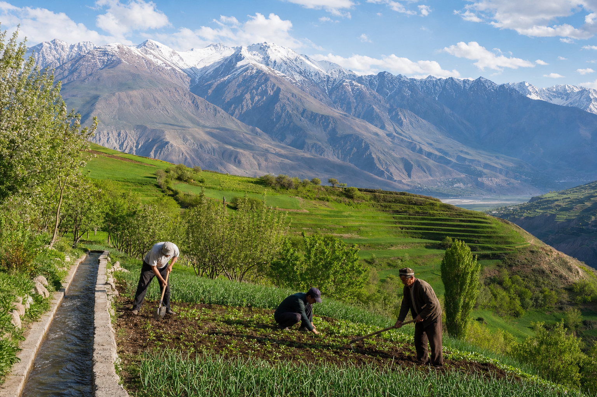

Рушди инфрасохтор
Роҳҳо, пулҳо ва шабакаҳои муосир барои дастрасии беҳтар.
Мо инфрасохтор, иқтисодиёт ва ҳаёти манотиқи кӯҳиро бо технологияҳои муосир ва эҳтиром ба табиат тағйир медиҳем.


«Рушди Манотиқи Кӯҳистон» — созмонест, ки ба рушди ҳамаҷонибаи минтақаҳои кӯҳии Тоҷикистон нигаронида шудааст. Мо лоиҳаҳои инфрасохторӣ, иқтисодӣ ва иҷтимоиро таҳия ва амалӣ менамоем, то сатҳи зиндагии аҳолии кӯҳистон беҳтар гардад.
Се арзиши асосии мо — устуворӣ, навоварӣ ва ҷамъият. Мо бовар дорем, ки рушд бояд бо эҳтиром ба табиат, бо истифодаи технологияҳои муосир ва ба манфиати аҳолии маҳаллӣ сурат гирад.
Роҳҳо, пулҳо ва шабакаҳои муосир барои дастрасии беҳтар.
Истгоҳҳои гидро ва офтобӣ барои нерӯи тоза.
Экотуризм ва меҳмонхонаҳо дар дили кӯҳсор.
Боғдорӣ ва чорводории муосир дар шароити кӯҳистон.
Мактабҳо ва беморхонаҳо барои ҷамоатҳои дурдаст.
Экология ва нигоҳдории обу ҳавои кӯҳистон.
Роҳи муосире, ки деҳаҳои дурдасти Помирро ба шабакаи марказӣ пайваст мекунад.

Истгоҳи барқи обӣ, ки минтақаро бо нерӯи тоза ва устувор таъмин мекунад.

Лоҷҳои чӯбӣ ва пайроҳаҳо барои сайёҳони табиатдӯст.
Мактаби нав барои кӯдакони ҷамоатҳои кӯҳии дурдаст.